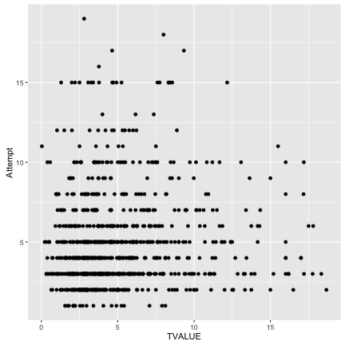
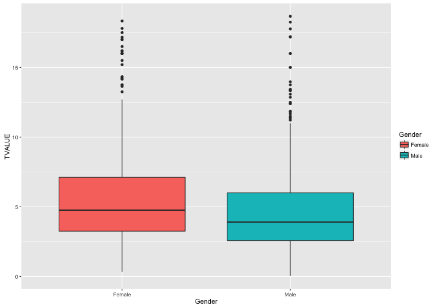
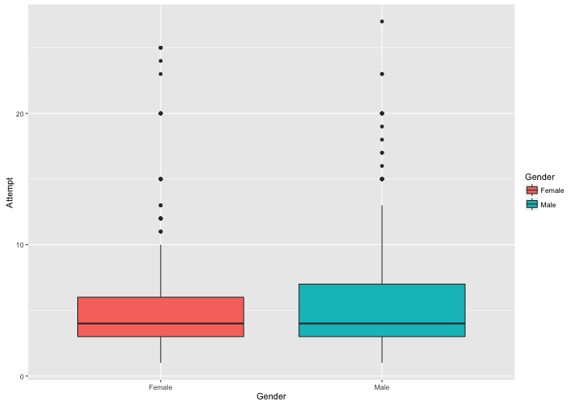
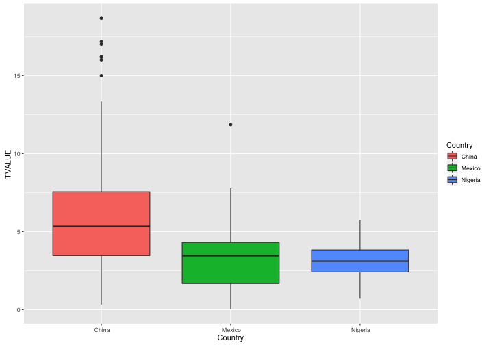
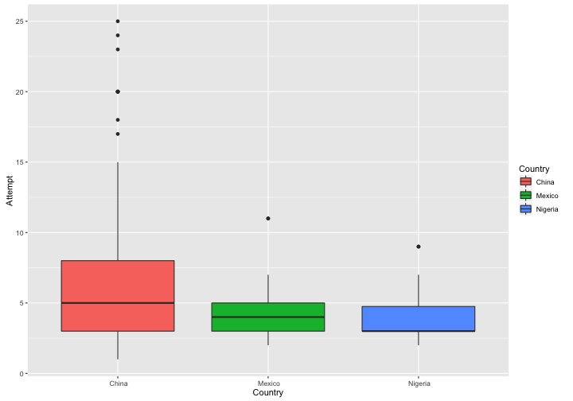

大数据时代，放大创造力
创造力研究展示
朱浚铭 Jeremy
商务分析
目录
- 大数据时代所需技能
- 创造力的发现与放大
- 相关研究结果展示
大数据，所需技能
- 批判性思维
- 跨学科合作能力
- 数据驱动的科研能力
- 创造力！
谁更有创造力？
什么样的人创造力更高？
- 男人
- 女人
- 工程师
- 艺术家
创造力有很多种
解释参考来自于上一页
发现创造力
创造力多样性：任何人都有创造力
发现创造力
- 不同创造力水平
- 创造力类型
- 动机
- 机遇
放大创造力
- Wild Mind
- Idea Journal
- Intelligent Fast Failure
项目介绍
统计分析结果展示
- 相关性 Pearson Correlation:
- between T-value and Attempt: 0.132 (p=0.001*)
- between Number of shoes and Attemtp: -0.097 (p=0.005*)

统计分析结果展示
- 创造力表现在男、女间并无统计显著区别

统计分析结果展示
- 智能快速失败在男、女间并无统计显著区别

统计分析结果展示
- 创造力表现在国家间有显著区别

统计分析结果展示
- 智能快速失败在国家间有显著区别

在线应用